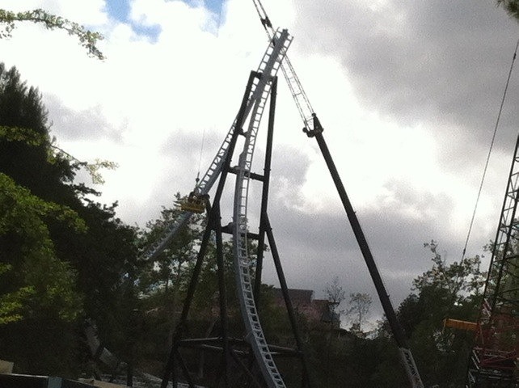
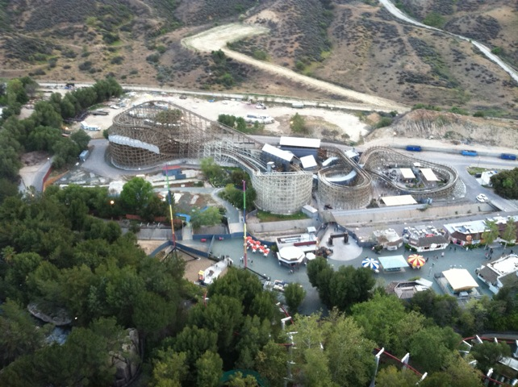
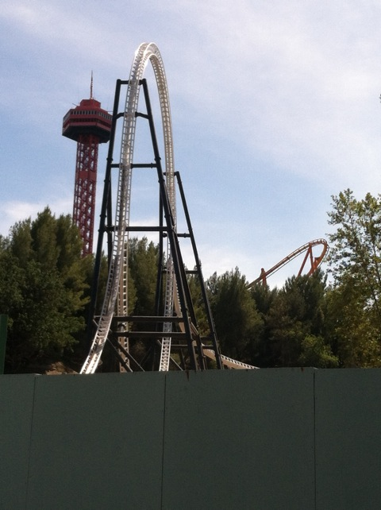
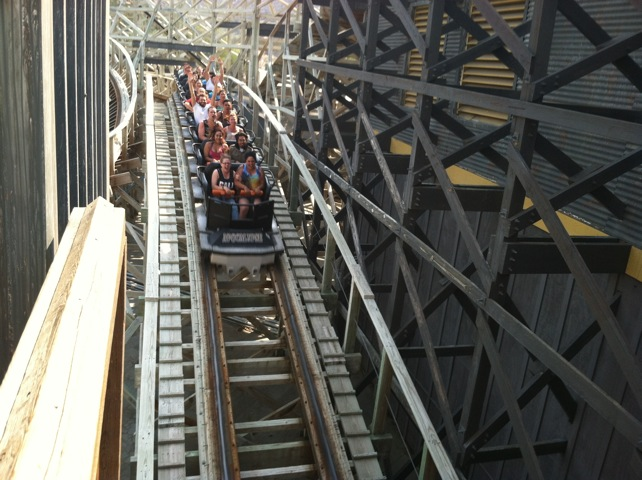

Spring SFMM 2013
All right. Time for another update. I know this isn't a real major update as its just a recap of our tiny little visits to Six Flags Magic Mountain in the Spring. I know we haven't done any real updates for 2013 yet. But don't worry. We're doing our Lagoon road trip next week. So we'll be doing a big update for that. Anyways, for our first visit to SFMM of the spring, we're off to the Honey Tasting Room for some more fun.
Ok. Screw Full Throttle. The highlight of 2013 for Six Flags Magic Mountain are the new buses they got to replace the trams. =)

Speaking of Full Throttle, looks like the loop is coming up quite quickly.
I've always been a fan of the Loony Tunes Statue Fountains at the Six Flags parks.
Ugh. Dammit SFMM!!! Well, at least you're warning us of the one train operations.
Jen's goal of getting over her fears continues to gradually make progress as now she finally made it onto Terminator/Apocalypse. Sweet. Next up, Collosus.

Terminator from the Sky Tower.
"The chilli at this Chilli Cook Off is so delicious that its worth skipping work for!!!"
This is how we ranked the Chilli. Whoever made #5, your chilli was freaking delicous. Though all of them were good except for #9, which I swear was just a can of Rosarita beans that they got from Vons, poured in a cup, and called it Chilli.
 Did someone say they had a problem with people taking pictures of Full Throttle? Cause if they did, I took this photo just for you. Try and f*cking stop me. =)
Did someone say they had a problem with people taking pictures of Full Throttle? Cause if they did, I took this photo just for you. Try and f*cking stop me. =)

Oh yeah. Speaking of Full Throttle, its trackwork is all done. Yeah, every other 2013 coaster is open, but at least we made it this far.
Dude!!! Look at this line for X2!!! I smell a marathon before my shift starts!!! =)
Seriously Six Flags Magic Mountain? I know I don't exactly have the highest expectations when visiting and I can let a lot slide. But using duct tape and a sharpy to change the menu? You're making Taco Bell look like Fine Dining here.
You know, us getting on the Slingshot for free is technically upselling. Can I get an upselling bonus now? =)
You guys enjoying all the soot and ash from the Camarillo Fire up there?

Run Terminator!!!!! Run before the fire spreads to Valencia and burns down the ride!!!
Love this shot of Apocalypse with the slingshot in the background.
 I think I found out where Six Flags gets the meat for the food they serve in Oasis.
I think I found out where Six Flags gets the meat for the food they serve in Oasis.
Home